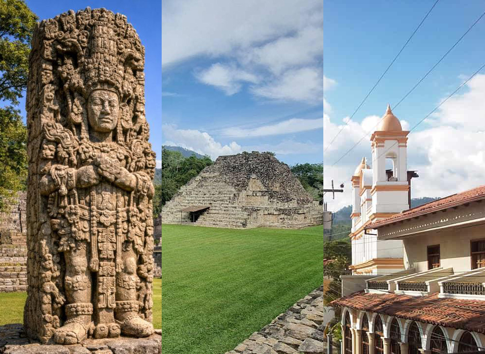

Ruta Maya y Arqueología
Copán Ruinas · Parque Arqueológico El Puente · Santa Rosa de Copán
Detalles del viaje
Descripción física: Complejo arqueológico ubicado en un valle tropical rodeado de montañas y vegetación. Presenta plazas ceremoniales, terrazas, templos, escalinatas y monumentos de piedra tallada.
Principales atractivos: La Escalinata de los Jeroglíficos, la Gran Plaza, las estelas mayas, el juego de pelota y el conjunto arqueológico conocido como la Acrópolis. Los museos de la zona complementan la visita.
Dificultad de acceso: Baja dentro del parque, con caminatas sobre senderos y superficies irregulares. El acceso por carretera es relativamente sencillo, aunque el trayecto desde las ciudades principales puede ser largo.
Descripción física: Población de montaña con calles empedradas, construcciones bajas, plazas, pequeños hoteles y restaurantes tradicionales.
Principales atractivos: Parque central, gastronomía local, artesanías, museos, talleres de artesanos y recorridos hacia fincas de café y reservas naturales.
Dificultad de acceso: Baja a moderada. El centro se puede recorrer a pie, aunque existen pendientes y calles empedradas.
Descripción física: Sitio arqueológico de menor extensión que Copán, situado en un entorno boscoso y montañoso del occidente hondureño.
Principales atractivos: Estructuras prehispánicas, plazas, vestigios residenciales y senderos entre vegetación tropical. Es una alternativa para complementar el circuito arqueológico.
Dificultad de acceso: Baja a moderada, según el estado del sendero y las condiciones climáticas.
Tabla de distancias y traslados — Ruta Maya
Tiempos orientativos en vehículo particular; no incluyen paradas, visitas ni congestión. Las distancias pueden variar según el punto exacto de salida.
| Destino y altitud | Desde San Pedro Sula | Desde Tegucigalpa | Desde La Ceiba |
|---|---|---|---|
| Parque Arqueológico de Copán, ≈600 m | 180–190 km; 3–4 h | 400–420 km; 7–9 h | 360–390 km; 6–8 h |
| Centro de Copán Ruinas, ≈650 m | 180–190 km; 3–4 h | 400–420 km; 7–9 h | 360–390 km; 6–8 h |
| Parque El Puente, ≈300–500 m | 130–160 km; 2.5–3.5 h | 350–390 km; 6–8 h | 320–370 km; 5.5–7.5 h |